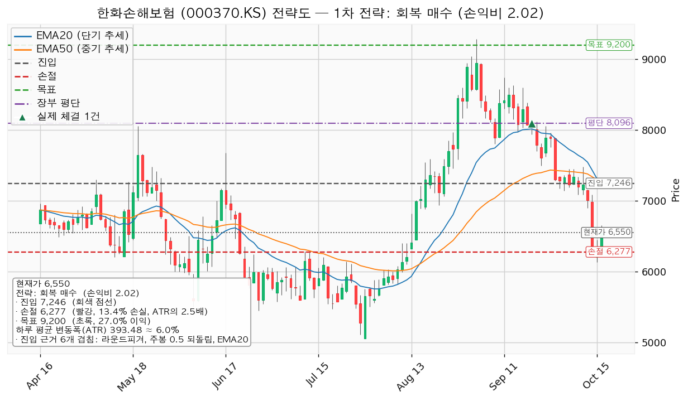
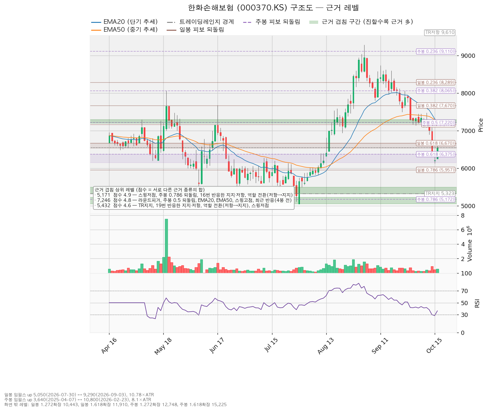
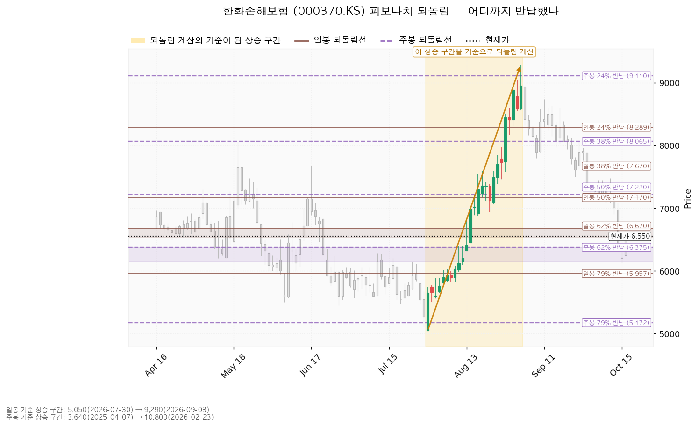
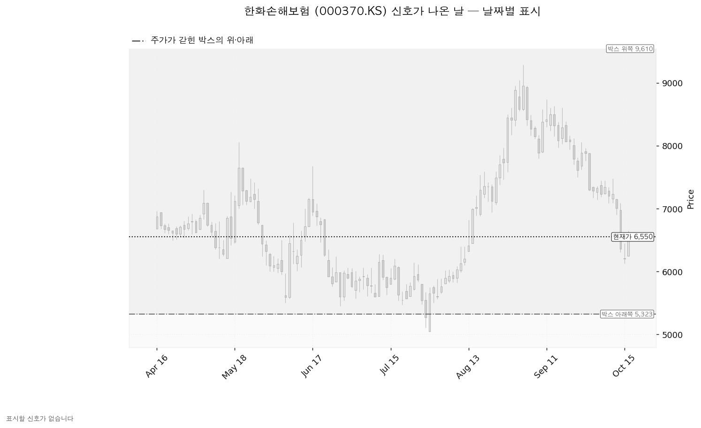

한화손해보험 (000370.KS)은 장기보험·자동차보험·일반보험을 파는 국내 손해보험사입니다.
| 선 | 가격 | 판정 방식 | 현재 상태 | 뜻 |
|---|---|---|---|---|
| 회복선 | 7,246원 (+10.63%, 1.77 ATR) | 일봉 종가 회복 후 되돌림 지지 | 회복 대기 | 라운드피겨 7,200원 + 주봉 0.5 되돌림 + 20·50일 지수이동평균 + 스윙고점 + 4봉 전 반응. 국면 이탈 중에는 사는 선이 아닙니다 |
| 집행 손절 | 6,277원 (-4.17%) | 장중 저가 도달 | 미도달 | 7,246원 진입분에만 유효. 미진입자에게는 무의미 |
| 관망 종료 기준 | 6,090원 (-7.02%, 1.17 ATR) | 일봉 종가 이탈 | 유지 중 | 아래쪽 겹침 구간(6,090~6,285원) 하단. 매수 계획 종료 — 새 리포트 대기 |
| 확인선 | 9,200원 (+40.46%) | 일봉 종가 돌파 후 되돌림 지지 | 미돌파 | 주봉 0.236 되돌림 + 9월 3일 스윙고점 + 27봉 전 반응. 박스 상단 9,610원은 그 위 맥락 |
| 폐기선 | 5,323원 (-18.73%, 3.12 ATR) | 이탈 후 3거래일 내 회복 실패(또는 그 전 4,930원 아래 종가) + 반등에서 저항 확인 | 유지 중 | 박스 하단. 3 ATR 넘게 떨어져 실무상 작동하지 않음 — 미진입자가 볼 선은 6,090원 |
| 항목 | 값 |
|---|---|
| 이름 / 엣지 | 회복 매수 · 모멘텀(저항을 종가로 되찾으면 그 방향이 이어진다는 전제). 자주 틀리고 소수가 크게 맞는 유형이며, 이 엔진에서 잰 승률은 없음 |
| 진입 | 7,246원 일봉 종가 회복 (+10.63%) — 코스피 200일선 회복 전에는 집행하지 않음 |
| 진입 근거 | 라운드피겨 + 주봉 0.5 되돌림 + 20일 지수이동평균 + 50일 지수이동평균 + 스윙고점 + 4봉 전 반응 (7,200~7,300원) |
| 집행 손절 | 6,277원 — 주봉 0.618 되돌림과 라운드피겨 6,400원이 겹친 6,375~6,400원 바로 아래 |
| 목표 | 9,200원에서 전량 매도 (목표 도달) |
| 손익비 / 구조 증명도 | 1:2.02 (손절 2.46 ATR, 13.38%) / 회복 확인형 |
대표로 고른 이유: 손익비 2.02 × 회복 확인형 × 진입 근거 여섯 개 겹침. 산출된 셋업이 이것 하나뿐이고, 상대강도·거래량 배수 0.924(지수 대비 20일 초과수익 -7.55%, 상대강도선 20일 기울기 -8.92%)는 순서를 바꾸지 않았습니다. 손절이 겹침 구간 아래라 엔진 손절이 곧 구조적 손절이며 별도의 구조적 손익비는 없습니다. 엣지는 모멘텀이지만 집행은 9,200원 전량 매도·트레일링 없음으로 고정했고, 분할하면 전 구간 손익비가 1:2.02에서 1:1.25(본전 손절에서 멈출 때 1:0.24)로 내려가 단일 청산을 씁니다. 확인선이 목표와 같은 9,200원이라, 막히면 9,200원에서 전량 매도 (목표 도달), 일봉 종가로 넘으면 상승 확정이며 새 셋업으로 다시 잡습니다. 진입가가 현재가 위라 추격 문제는 없고, 진입가 7,246원은 평단 8,096원보다 -10.5% 아래입니다(보유분은 매도하므로 진입하면 신규 진입).

| 가격대 | 겹치는 근거 |
|---|---|
| 9,110~9,290원 | 주봉 0.236 되돌림 + 스윙고점 + 27봉 전 반응 (확인선·목표) |
| 7,200~7,300원 | 라운드피겨 + 주봉 0.5 되돌림 + 20·50일 지수이동평균 + 스윙고점 + 4봉 전 반응 (회복선) |
| 6,375~6,400원 | 주봉 0.618 되돌림 + 라운드피겨 (손절이 이 아래) |
| 6,090~6,285원 | 14·15번 반응한 가격(6,090원은 저항→지지) + 라운드피겨 + 스윙고점 (관망 종료 기준, 10월 15일 저가 6,130원) |
| 5,050~5,230원 | 16번 반응한 가격(저항→지지) + 스윙저점 + 주봉 0.786 되돌림 |
박스는 730봉 중 최근 180봉, 5,323~9,610원입니다(40봉 창은 불성립, 90·180봉 성립). 박스 안쪽은 중립입니다 — 상승봉 거래량이 하락봉의 1.49배지만 지지 테스트마다 매도 거래량이 늘고(6월 8일 0.97배 → 7월 30일 1.93배) 저점은 절하입니다. 가격은 직전 구간(3,935~7,107원)과 겹치는 자리에서 올라와 같은 횡보의 연장입니다.

일봉 되돌림 기준은 7월 30일 5,050원 → 9월 3일 9,290원이며, 현재가 6,550원은 0.618 되돌림 6,670원 아래로 내려와 0.786 되돌림 5,957원이 다음입니다. 주봉 기준(2025년 4월 3,640원 → 2026년 2월 10,800원)으로는 0.5 되돌림 7,220원과 0.618 되돌림 6,375원 사이입니다.

박스 안에서 속임수 하락·속임수 상승·강세·약세 신호로 잡힌 날이 없어 아래 차트에 색으로 남은 캔들이 없습니다. 국면 후보는 하락 국면(이동평균 역배열, 기울기 음)이고 RSI는 36.31입니다.

후행·선행 PER이 조회되지 않아 추정 주당순이익으로 봅니다 — 2026년 2,894원(+28.03%), 2027년 3,326원(+14.93%), 현재가 기준 2.26배·1.97배. 목표주가는 5명 평균 8,620원, 최저 8,000원, 최고 9,500원이며 현재가 6,550원은 애널리스트 5명 중 가장 낮은 목표보다도 아래입니다. 9월 3일 9,290원 대비 -29.49% 하락은 배수 수축입니다 — 2027년 추정치는 90일 +17.3%, 최근 30일 +8.0%로 상향이 진행 중이고, 2026년 추정치는 90일 +8.2%, 30일 +1.1%입니다. 현금흐름(2024-12-31 결산)은 영업 +1조 4,924억원, 잉여 +1조 4,692억원으로 적자가 아니며 설비투자 232억원(+155.8%)은 규모가 작습니다. 목표 9,200원은 2027년 이익 기준 2.77배(현재 1.97배), 2026년 기준 3.18배(현재 2.26배)라 상승분 대부분이 배수 회복에서 옵니다. 컨센서스 평균 8,620원도 2027년 기준 2.59배입니다. 컨센서스 시계는 12개월, 이 셋업은 수 주입니다.
| 날짜 | 이벤트 | 볼 것 |
|---|---|---|
| 매 거래일 | 코스피 200일선(6,411) 회복 여부 | 회복 전에는 신규 매수 없음 |
| 미정 | 분기 실적 | 다음 실적 발표일이 조회되지 않았습니다. 2027년 추정 주당순이익 3,326원의 상향 지속 여부 |
다음 실적 이후 구간은 확인할 자료가 없습니다.
국면이 돌아와 7,246원에 진입하면 계좌 139,498,400원의 1%(1,394,984원)를 손절 폭 969원으로 나눠 1,439주 · 10,427,023원(계좌의 7.5%)이며 13% 상한 안입니다. 하루 평균 변동폭이 주가의 6.01%로 8% 아래이고 손절이 그 2.46배라 도구 적합성 문제는 없습니다. 판정은 신규 매수 없음(국면 이탈), 대기 좌표는 7,246원 회복 매수 1:2.02이며 미달 항목은 20일선 위 · 이동평균 정배열 · 200일선 위 · 52주 고점 대비 · 지수 대비 20일 초과수익 · 상대강도선 신고가입니다. 보유 50주는 다음 거래일 전량 매도 (국면 이탈).
후행·선행 PER과 다음 실적 발표일이 조회되지 않았고, 현금흐름은 2024-12-31 결산 기준입니다. 보유 50주에는 9월 28일 목표(7,920원), 9월 30일 집행 손절(7,690원) 두 번의 매도 신호가 장부에 매도 없이 남아 있습니다.
ATR: 하루 평균 변동폭. PER: 주가 ÷ 주당순이익. 지수이동평균: 최근 값에 가중치를 더 준 이동평균. RSI: 상승분과 하락분의 비율로 과열·침체를 재는 지표. 되돌림: 앞선 상승분 중 얼마를 반납했는지를 비율로 나눈 선. 상대강도선: 종목 가격을 기준 지수로 나눈 선.